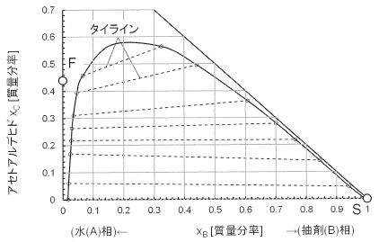

令和2年度 問33 化学プロセス
下図はアセトアルデヒド（C）－水（A）－抽剤（B）の液液平衡を示す三角図である。図中の破線はタイラインである。いま0.44質量分率のアセトアルデヒド水溶液F＝100 kgから抽剤S＝100 kgを用いてアセトアルデヒドの単抽出をおこなう。両者を混合して、混合液M［kg］とした後、静置して抽出液E［kg］と抽残液R［kg］に分ける。この単抽出操作におけるR［kg］とE［kg］の比（R：E）はどうなるか、最も適切なものを選べ。

①
25：75
②
35：65
③
45：55
④
55：45
⑤
65：35
正答
② 35：65
抽出対象の溶質を抽質、抽質を溶かしている溶媒を希釈剤と呼びます。今回ではアセトアルデヒドが抽質、水が希釈剤です。希釈剤に溶かした抽質を、より抽質の溶解度が大きな抽剤で取り出します。
まずFとS1を結ぶ直線を引きます。F-S1の中点をMとします。Fの座標は（0.00, 0.44）、S1の座標は（1.00, 0.00）であることからMの座標は（0.50, 0.22）となります。
問題に記載のタイライン（破線）は、液液抽出実験をしたときに抽剤と希釈剤の中に含まれる抽質の質量分率をそれぞれプロットし、両プロット間を直線で結んだ線です。
今回の問題ではM点があるxc＝0.22の部分にタイラインが引かれているため、この線を活用します。
溶解度曲線（実線）とM点を通るタイライン（xc＝0.22の破線）との交点をA, Bとすると、座標はAが（0.03, 0.22）、Bが（0.76, 0.22）です。BMとAMとの距離の比BM：AMがR：Eとなります。
R：E＝BM：AM＝(0.76-0.50) ： (0.50-0.03)＝0.26：0.47＝35：65となります。